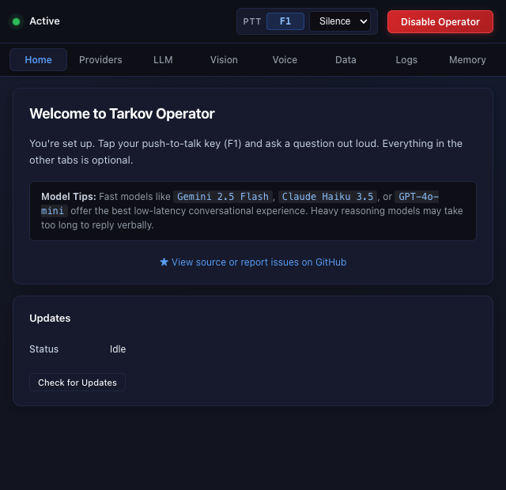

A desktop voice companion powered by live tarkov.dev data. Tap a key while raiding, ask your question, and hear tactical answers spoken back directly into your headset.
"What ammo penetrates class 5 armor?"
Top choices: 7.62x51mm M61 (64 pen), 7.62x54mmR SNB (62 pen), and 5.56x45mm SSA AP (56 pen) will reliably pierce Class 5 armor on the first shot. Budget pick: 7.62x39mm PP or 5.56mm M855A1 will break through after 2-3 hits.
Source: tarkov.dev live ammo tableBuilt specifically for Escape from Tarkov players. Fast, concise spoken answers formatted for real-time tactical decisions.
Instant penetration tier calculations and damage values against specific armor classes and helmets.
Live flea market averages, vendor prices, and slot-value comparisons to prioritize your backpack space.
Find-in-raid quest item requirements, key locations, trader tasks, and hideout module upgrade components.
PMC and Scav extraction prerequisites, vehicle extract fees, key requirements, and switch locations.
Optionally take a snapshot of your screen on hotkey press so the assistant can read your inventory, stash, or map.
Tap your hotkey once, speak naturally, and stop talking. Silence detection automatically cuts the mic and sends your query.
Simple, dark-themed tactical settings designed to get out of your way during gameplay.

Instant system status, push-to-talk reminder, and 1-click update checker.
Tarkov Operator runs completely isolated from the Escape from Tarkov game process. Here are the exact technical facts:
Does not scan RAM, read DMA, or access game process memory in any way.
Never hooks DirectX, graphics shaders, Windows overlays, or game binaries.
Game files, configuration settings, and network packets are completely untouched.
All game data is fetched from the public tarkov.dev GraphQL API and indexed locally via SQLite FTS5.
Every line of code is open source and auditable by anyone on GitHub.
Ships with offline game snapshot data so common lookups execute with zero latency.
Simple setup with no complex configuration required.
Download the installer for Windows (.exe) or macOS (.dmg). Run the app to open the settings panel.
In the Providers tab, paste your OpenRouter API key. A single key covers both the fast AI model and Whisper speech-to-text.
Pick your push-to-talk key (default is F1). Click Enable Operator, minimize to system tray, and head into your raid!
Code-signing certificates for Windows and Apple Developer programs cost hundreds of dollars annually. As an open-source hobby project, the app is currently unsigned.
The entire source code is public and can be verified by anyone. On Windows, click More info → Run anyway. On macOS, right-click the app in Applications and click Open.
Modern fast models (such as GPT-4o-mini or Claude 3.5 Haiku) combined with Whisper speech transcription cost around $0.001 – $0.005 per voice query. Even asking 20 questions across a full gaming session costs less than 5 cents total.
Yes! Tarkov Operator supports Ollama / local endpoints with automatic RAG (Retrieval-Augmented Generation) fallback for models that don't support function calling.
By default, it uses your operating system's built-in system voice (zero configuration, zero cost). You can also configure ultra-realistic AI voices via ElevenLabs or OpenRouter TTS in the settings tab.
Game data (ammo stats, flea market prices, quest objectives, and extracts) is provided by the community-driven tarkov.dev GraphQL API and synced into a local SQLite database for instant retrieval.